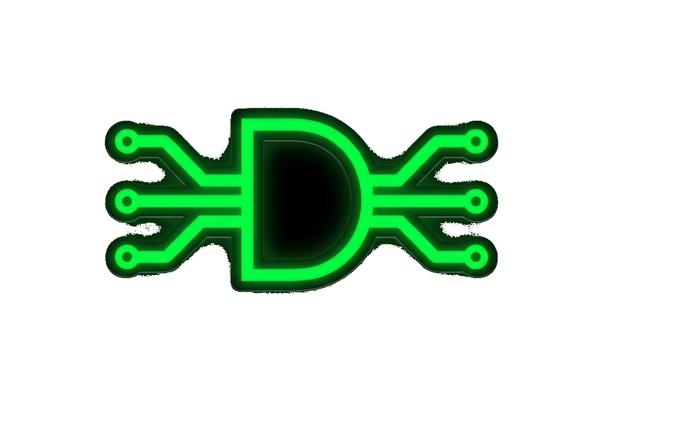
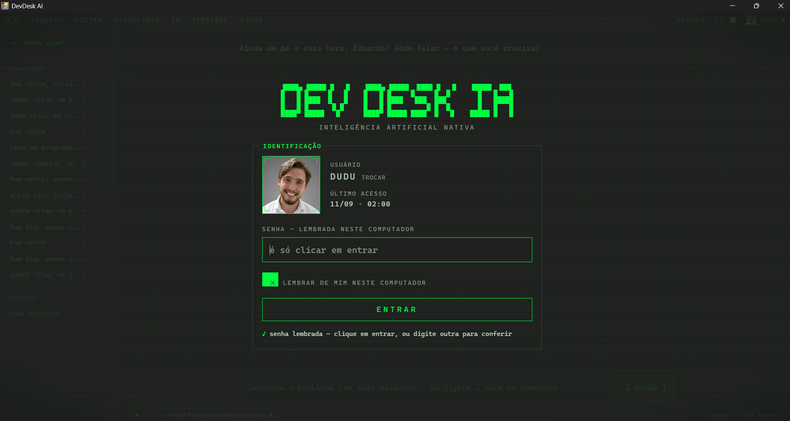
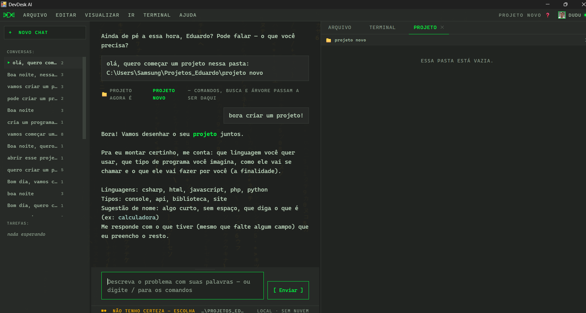
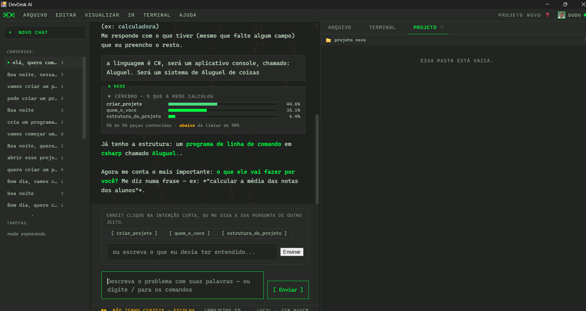
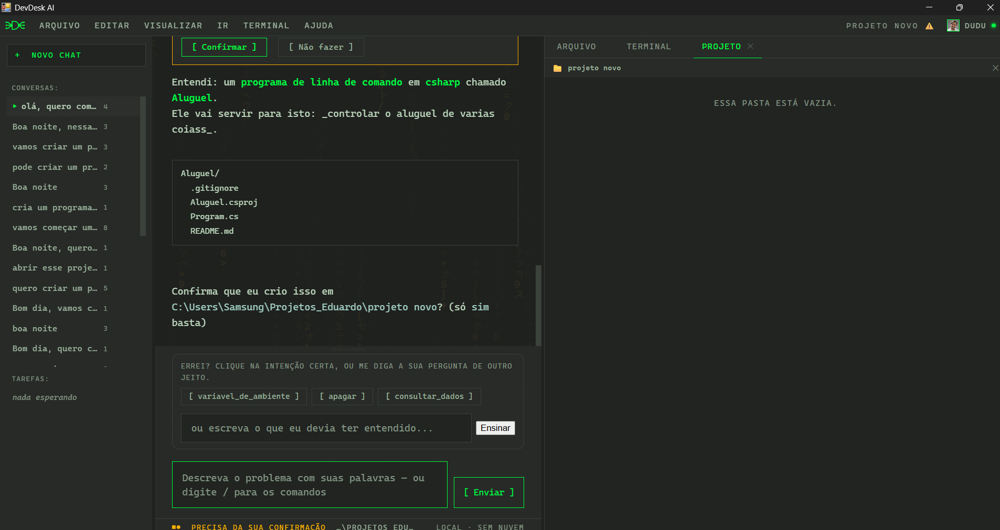
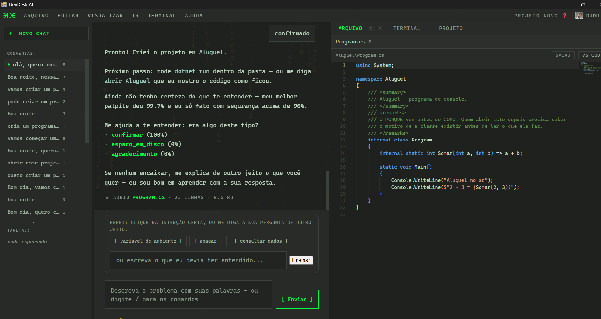

████▄ █████ █ █ ████▄ █████ ████ █ █ █████ ███ █ █ █ █ █ █ █ █ █ █ █ █ █ █ █ █ ████ █ █ █ █ ████ ███ ███ █ █████ █ █ █ █ █ █ █ █ █ █ █ █ █ █ ████▀ █████ █ ████▀ █████ ████ █ █ █████ █ █inteligência artificial nativa Roda 100% na sua máquina · sem nuvem · sem chave
Nenhum framework de IA, nenhum modelo baixado da internet. Camada, ativação, custo e retropropagação são código próprio — cabem no projeto e são auditáveis.
A par obrigatória da softmax. Ela mede o quanto as probabilidades da rede distam da resposta certa — e a penalidade por errar com certeza absoluta é alta.
Frase torta ou com erro de digitação ainda alcança a intenção certa. O texto vira peças de letras e o significado emerge de uma janela de contexto.
Abaixo do limiar o assistente não se cala: responde com o melhor palpite, avisando a dúvida. E ainda mostra os três candidatos — o clique corrige e vira exemplo rotulado.
Toda camada pode se abster, e abster-se escala o nível.
Do problema que chega — em qualquer formato — até a solução com caminho de volta. Cada etapa pode se abortar e passar a vez para a próxima.
# a espinha do sistema, em uma linha texto · print · áudio · vídeo → percepção → entendimento → conhecimento → investigação → ação → aprendizado → painel
Nenhum modelo baixado, nenhuma API de terceiro. Camada por camada em NumPy — percepção, ativação, custo, retropropagação — com o gradiente conferido contra a derivada numérica. E quando ela não tem certeza, mostra os palpites e deixa você escolher.
Cada degrau funciona sozinho e pode ser mostrado. O que está pronto está medido — e o que não está, está declarado.
A conversa acontece numa tela estilo Devin com tema retrô de terminal — e o mais importante: quando a rede acerta com confiança, a resposta vem na ponta da língua, sem precisar ver a rede por dentro. Quando ela erra, mostra exatamente o que calculou.
> quero criar um projeto Bora! Vamos desenhar o seu projeto juntos. Pra eu montar certinho, me conta: que linguagem você quer usar, que tipo de programa você imagina, como ele vai se chamar e o que ele vai fazer por você (a finalidade). > python Fechou — já anotei: python. Me conta a próxima parte…





O código, a arquitetura e o diário de cada decisão estão no repositório.
► Ver no GitHub